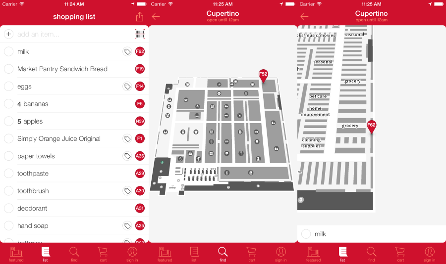
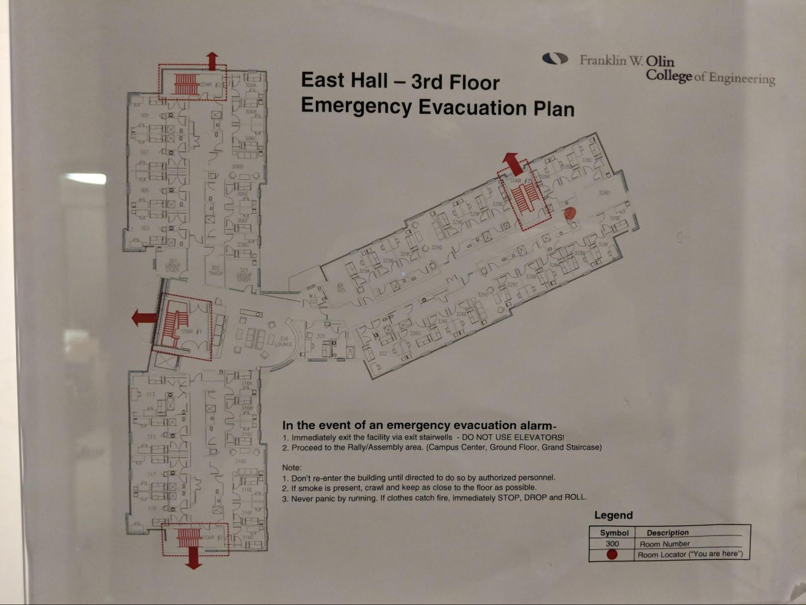
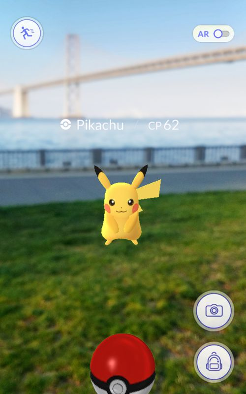
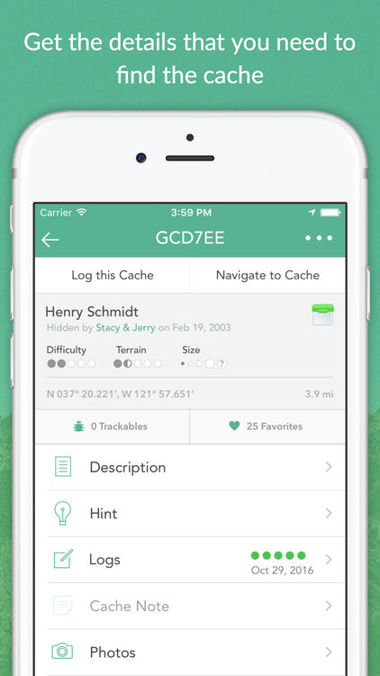

Inspirational Designs
An amalgamation of other designs to inspire, warn, and inform
Competitor Systems
Asking for Directions
This age-old method of navigation is particularly relevant because it is definitely a competitor, and often the easiest way to navigate indoors; however, it is also a source of many inspirations, including methods of navigating via landmarks and other not typically encoded in software tools.
Store Aisle Signs
Grocery store signs can give you high level hints as to what’s in an aisle, which can help you navigate the store if you’re looking for something common or something vague, but if you have a specific, niche item you’re searching for they can be less than useful.
Target In-Store Navigation App

This is a nice app in that it can show you exactly where you need to go in a complex, often difficult to navigate indoor space, but it presents that information in a top down, grayscale map view and can’t give you up to date directions based on your position.
T Station Signage
T station signage helps passengers navigate their way through T stations, and so addresses an indoor navigation problem that is relevant (to our lives) and difficult.
Google Streetview
Coleman Ellis
Google Streetview allows users to take a first person look at almost any location on a street in the world. This can be a very useful tool for familiarizing yourself in a new location, or ensuring that you’re able to recognize a building that you’re traveling to. It’s also a very useful perspective to convey this information in -- first person view from approximately person height is how most of us perceive the world, so the images themselves aren’t disorienting or confusing. However, Streetview doesn’t have completely integrated functionality for giving directions, and it also doesn’t have many images of interior spaces (though it does have some). For our interaction experience, we could utilize Streetview’s point of view and ability to view in all directions, but adapt it for interior spaces and giving directions. Some of these adaptations could include overlaying direction arrows on images or simplifying images to highlight only important visual keystones (signs, aisles, intersections).

Related Systems
Invisible Map
Invisible Map (from Paul Ruvolo’s lab) is a system that allows someone to make a digital map, anchored by tags on the walls, so others can walk around and be told by their phones about nearby landmarks or locations. This is related because it’s based around indoor navigation and also makes use of crowdsourced data. This may have been a competitor system if it were more developed.
Waze
Waze (and other standard map apps) can give directions (and additional feedback) that are useful while driving, but it often breaks down as a pedestrian, especially when you’re inside.
Floor Plans with Fire Routes
Louise Nielsen

Many large buildings have floor plans with highlighted fire escape routes posted periodically on the walls. The primary purpose here is safety, especially in case of an emergency; however, these floor plans are often used for much more mundane navigation as well. One aspect of the design we may wish to emulate is the versatility - while there is a specific intent here, it manages to serve many purposes. However, we should balance that with making an intentional interface. One of the more useful (outside an emergency) aspects of these floor plans is the room numbers in every room, but that clutters the map and makes initial understanding more difficult. If we zoom out a level and consider the building, rather than the floor plans, as the system, we see that there is often no clearer way to find a specific room. Having only one difficult-to-read interface for finding a room (or other object) is something we should avoid.
BlindWays
BlindWays helps users navigate in a landmark-focused way, while integrating well with other apps (such as Google Maps), crowdsourcing clues/landmarks, and being accessible.
Inspirations
Clew
Clew (from Paul Ruvolo’s lab) guides the user along a path they have followed before. This serves as an inspiration because it approaches navigation in a novel way, is an accessible system, and uses a lot of non-text and non-visual cues to guide users along the path.
Tile
Tile’s use of bluetooth and crowdsourcing data from many phones is (while a bit creepy) inspirational.
PokemonGo
MJ McMillen

This app is not traditionally seen as a navigation tool but I have used it in the past to navigate around parks towards areas of interest. Pokestops provided a small picture and a title for different areas. It was helpful to use the app to get my bearings and navigate towards those areas. I even found small plaques, landmarks and other small hidden places I would not have found otherwise. This experience was very interesting because navigation is not the app’s primary purpose. It isn't a direct navigation system but it does point in the right direction. This type of navigation is not really captured in many other apps. It shows you your location and your destination’s location and you navigate towards that spot choosing the best path on your own. I find this interesting because it still forces the user to examine their surroundings to find their way. This app is not really a competitor for any of the other systems listed here but it is serving a similar general purpose. We could learn from this accidental navigation system and explore what information is actually needed to find your destination.
Geocaching
Kaitlyn Keil

This app navigates the user to the location in traditional maps fashion, which works well for outdoors and is a generally expected experience. However, once at the point, the user is left in a space where the key could be anywhere. The whole point of geocaching is to make finding the object an exciting, rewarding experience; this app achieves this by providing a vague description of what to look for and where to look, then giving hints for when the user gets frustrated. We probably don’t want to have the vagueness to start; however, creating an experience that is rewarding and feels like a genuine achievement when you find your target would be a bonus. We might not want to gamify it in this way, though. Also, the nature of this app is to have a lot of things be ‘premium only’, which is the worst. Also, it seems like the user can only ever see either the map or the descriptions of what to look for; having both on one screen might be a bit crowded, but can give a better sense of connection to the big picture. I also would, personally, have hints be inside the description rather than their own tab, so that you could see the description and how it relates to whatever hints there might be for the object. A good aspect of this app, which we might be able to use, is the gradual narrowing of scope. It starts out large and then focuses in once that is relevant.